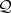

| $NCGB$IntegerOverflow=False, 288
$NC$Binary$Dir$, 669 $NC$Binary$Name$, 669 $NC$Loaded$NCGB$, 669 $NC$LongLoadTime$, 669 aj[expr], 182 ajMat[u], 145 Aliases, 237 AllOrders[aListofPolynomials, aListofIndeterminants], 717 ASCII→ False, 478 BilinearQ[aFunction], 205 Cascade[P, K], 156 CEEP, 220 Chain[P], 157 ChangeNCMakeGBOptions[option,value] — need to update description, 713 CleanUp, 495 CleanUpBasisQ[] - Untested in 1999, 496 Clear[NCPAns], 533 ClearMonomialOrder[], 460 ClearMonomialOrderAll[], 463 ClearMonomialOrderN[n], 463 ClearUserSelect[], 492 co[expr], 182 CoIsometryQ[aSymbol], 199 coMat[u], 145 CommutativeAllQ[expr], 177 CommutativeQ[X], 177 CommuteEverything[expr], 175 ComplexCoordinates[expr], 172 ComplexD[expr, aVariable], 173 ComplexRules, 172 ConjugateLinearQ[aFunction], 206 ContinuousTimeQ[ System1], 260 CreateCategories[aListOfPolynomials, aName], 535 CriticalPoint[expr, aVariable], 138 DegreeCapSB→ aNumber1, 468 DegreeSumCapSB→ aNumber2, 468 Deselect→{} (DISABLED), 492 Diag[aMatrix], 156 DilationHalmos[x], 158 DirD, 137 DirectionalD[expr, aVariable, h], 137 DiscreteTimeQ[ System1], 261 Dual[ System1], 263 EquivalenceClasses[aListOfPolynomials] or EquivalenceClasses[aListOfPolynomials, Simpler], 718 ExpandNonCommutativeMultiply[expr], 121 ExpandQ[inv], 180 ExpandQ[tp], 181 FeedbackConnect[ System1, System2 ], 258 FinishedComputingBasisQ[] - Untested in 1999, 493 FunctionOnRules[Rules, Function1, Function2, (optional On)], 218 GBTEST, 581 GetCategory[aCharString,NCPAns], 533 GetCategory[aListOfVariables, NCPAns], 531 GrabIndeterminants[ aListOfPolynomialsOrRules], 128 GrabVariables[ aListOfPolynomialsOrRules ], 129 Grad[expr, aVariable], 138 GroebnerCutOffFlag[n_Integer], 718 GroebnerCutOffMin[n_Integer], 719 GroebnerCutOffSum[n_Integer], 719 History Off, 496 IdempotentQ[aFunction], 207 IntegerOverflow, 288 inv[x], 178 InverseSystem[ System1], 264 invL[x], 179 invQ[x], 180 invR[x], 179 IsometryQ[aSymbol], 198 IterationNumber[aList] or IterationNumber[ aNumber ] - UNTESTED 1999, 494 Keep[anInteger], 234 Kill[anInteger], 235 KillTeX[], 233 LeftQ[expr], 176 LinearQ[aFunction], 206 LookAtLongExpression[anExpression], 236 LookAtMatrix[aMatrix], 235 MakeGif[file,expression], 724 MatMult[x, y, …], 144 NCAddAdjoint, 320 NCAddAdjoint[aListOfExpressions], 526 NCAddTranspose, 320 NCAddTranspose[aListOfExpressions], 526 NCAllPermutationLDU[aMatrix], 153 NCAutomaticOrder, 323 NCAutomaticOrder[ aMonomialOrder, aListOfPolynomials ], 461 NCBackward[expr], 130 NCBorderVectorGather[alist,varlist] , 192 NCCheckPermutation[SizeOfMatrix, aListOfPermutations], 155 NCCoefficientList[Expression, aListOfIndeterminants], 643 NCCollect[expr, aListOfVariables], 122 NCCollectOnVars[ Y**A**B**Z + A**X+A**Y, {A,B}] , 472 NCCollectOnVars[aListOfExpressions, aListOfVariables], 472 NCCollectSymmetric[expr], 123 NCCompose[aVerySpecialList], 215 NCContinueMakeGB[iterationNumber], 710 NCConvexityRegion[afunction,alistOfVars,opts], 186 NCCV→ True, 476 NCDecompose[expr, listofsymbols], 215 NCExpand, 121 NCForward[expr], 131 NCGBFastRegularOutput→ False, 479 NCGBMmaDiagnostics[ True], 477 NCGBMmaDiagnostics[False], 583 NCGBSetIntegerOverflow[False], 494 NCGBSetIntegerOverflow[True], 288 NCGuts, 193 NCHessian[afunction, {X1,H1},…,{Xk,Hk} ], 140 NCHilbertCoefficient[integer1, aListOfExpressions, integer2, anOption], 552 NCIndependenceCheck[aListofLists,variable], 190 NCInverse[aSquareMatrix], 153 NCLDUDecomposition[aMatrix, Options], 152 NCMakeGB Options CleanUp → True, 495 NCMakeGB[{},iters], 294 NCMakeGB[aListOfPolynomials, iterations], 491 NCMakeGB[polys, iters], 469 NCMakeGB[-b + x ** y , x ** a-1,4], 449 NCMakeRelations, 319 NCMakeRelations[aSpecialList, aSpecialList, ...], 525 NCMatrixOfQuadratic[ , {H1,…,Hn} ] , 188 NCMatrixToPermutation[aMatrix], 155 NCMonomial[expr], 132 NCMToMatMult[expr], 147 NCPermutationMatrix[aListOfIntegers], 154 NCProcess[aListOfPolynomials,iterations,fileName, Options ], 378 NCReconstructFromTermArray[anArray], 212 NCSetNC, 195 NCSetOutput[ optionlist,…], 227 NCShortFormulas→-1, 479 NCSimplify1Rational[expr], 135 NCSimplify2Rational[expr], 136 NCSimplifyAll[expressions, startRelations, iterations], 488 NCSimplifyRational[ expr ], NCSimplify1Rational[ expr ], and NCSimplify2Rational[ expr ], 134 NCSimplifyRationalX1[expressions, startRelations, iterations], 489 NCSolve[expr1==expr2,var], 124 NCStrongCollect[expr, aListOfVariables], | 122
NCStrongProduct1, 194 NCStrongProduct2, 195 NCTermArray[expr,aList,anArray], 210 NCTermsOfDegree[expr,aListOfVariables,indices], 123 NCTeX[], 230 NCTeXForm[exp], 228 NCUnMonomial[expr], 132 NCX1VectorDimension[alist], 552 NCXAllPossibleChangeOfVariables[ aListOfPolynomials], 649 NCXFindChangeOfVariables[ aListofPolynomials, anInteger, aString, Options], 646 NCXMultiplyByMonomials[ aVerySpecialList], 648 NCXPossibleChangeOfVariables[ aListofPolynomials, Options], 647 NCXRepresent[aListOfExpressions, aListOfVariables, aListOfDims, aListOfFunctions, aListOfExtraRules], 654 NoTeX[], 232 NumbersFromHistory[aPolynomial,history], 603 OverrideInverse, 181 ParallelConnect[ System1, System2 ], 259 PartialBasis[aNumber] - Untested in 1999, 494 PolyToRule, 298 PolyToRule[aPolynomial], 499 PolyToRule[RuleToPoly[r]]=r, 316 PolyToRule[a**x-1, b-x], 450 PrintMonomialOrder[], 460 PrintScreenOutput → True, 477 PrintScreenOutput → False, 478 PrintSreenOutput → False, 583 ProjectionQ[S], 201 RandomMatrix[m,n,min,max,options], 219 Redheffer[P], 157 Reduction[aListOfPolynomials, aListOfRules], 498 Reduction[, ], 317 RegularOutput[aListOfPolynomials,“fileName], 536 ReinstateOrder[], 497 RemoveRedundant[], 615 RemoveRedundant[aListOfPolynomials,history], 615 RemoveRedundentByCategory[ aListOfPolynomials, history], 616 RemoveRedundentByCategory[], 616 RR→ True, 467 RRByCat→ True, 467 RuleToPoly[aRule], 499 RuleToPoly[PolyToRule[r]]=r, 316 SaveRules[expression, ’optional tag → message’], 216 SaveRulesQ[], 217 SB→ False, 467 SBByCat→ True, 467 SBFlatOrder→ False, 468 SchurComplementBtm[M], 159 SchurComplementTop[M], 158 See[aListOfIntegers], 233 SeeTeX[] or SeeTeX[anInteger], 232 SelfAdjointQ[aSymbol], 197 SeriesConnect[ System1, System2 ], 258 SesquilinearQ[aFunction], 204 SetBilinear[Functions], 204 SetCleanUpBasis[n] - Untested in 1999, 495 SetCoIsometry[Symbols], 199 SetCommutative[a, b, c, …], 175 SetCommutingFunctions[ aFunction, anotherFunction], 208 SetCommutingOperators[b,c], 176 SetConjugateLinear[Functions], 206 SetIdempotent[Functions], 207 SetInv[a, b, c, …], 196 SetIsometry[Symbols], 198 SetKnowns[A,B], 472 SetLinear[Functions], 205 SetMonomialOrder[aListOfIndeterminants, n], 462 SetMonomialOrder[aListOfListsOfIndeterminates, ...], 458 SetMonomialOrder[A,B,a,b,f], 455 SetNonCommutative[A, B, C, …], 174 SetNonCommutativeMultiplyAntihomomorphism[ Functions], 209 SetProjection[Symbols], 201 SetRecordHistory[False], 496 SetRecordHistory[True] , 496 SetSelfAdjoint[Symbols], 197 SetSesquilinear[Functions], 203 SetSignature[Symbols], 202 SetUnitary[Symbols], 200 SetUnknowns[aListOfIndeterminates], 459 SetUnKnowns[aListOfVariables] , 460 SetUnknowns[X,Y,Z], 472 ShrinkBasis[aListOfPolynomials,iterations], 507 ShrinkOutput[aListOfPolynomials,fileName], 506 SignatureQ[Symbol], 202 SmallBasis[aListOfPolynomials, anotherListOfPolynomials, iter], 505 SmallBasisByCategory[aListOfPolynomials, iter], 505 SortMonomials[aListOfVariables], 712 SortRelations[aListOfRules], 712 Substitute[expr,aListOfRules,(Optional On)], 125 SubstituteAll[expr, aListOfRules, (optional On)], 126 SubstituteSingleReplace[expr, aListOfRules, (optional On)], 126 SubstituteSymmetric[expr, aListOfRules, (optional On)], 125 SupressAllCOutput→ False (very little outp ut to the screen), 710 SupressCOutput→ False (less output to the screen ), 709 Testing NCGB: GBTEST, 581 TeX→ True, 478 TimesToNCM[expr], 147 ToHTMLString[expression], 723 tp[expr], 182 tpMat[u], 146 TransferFunction[ System1], 262 Transform[expr,aListOfRules], 127 UnitaryQ[aSymbol], 200 UniversalBasis[aListOfPolynomials, NumberOfIterations], 718 UserSelect→{}(Distinguishing important relations), 491 WhatAreGBNumbers[], 602 WhatAreNumbers[], 602 WhatIsHistory[aListOfIntegers], 604 WhatIsKludgeHistory[aListOfIntegers], 605 WhatIsMultiplicityOfGrading[], 463 WhatIsPartialGB[], 493 WhatIsPartialGB[aListOfIntegers], 603 WhatIsSetOfIndeterminants[n], 464 |